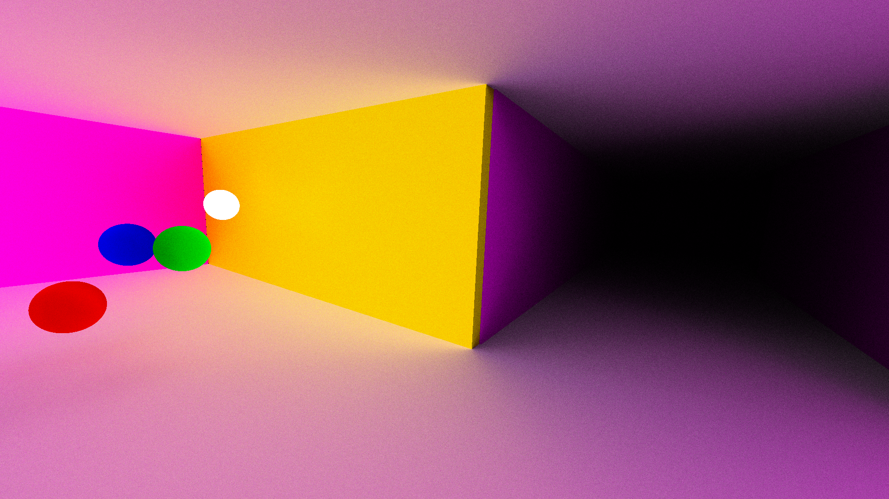
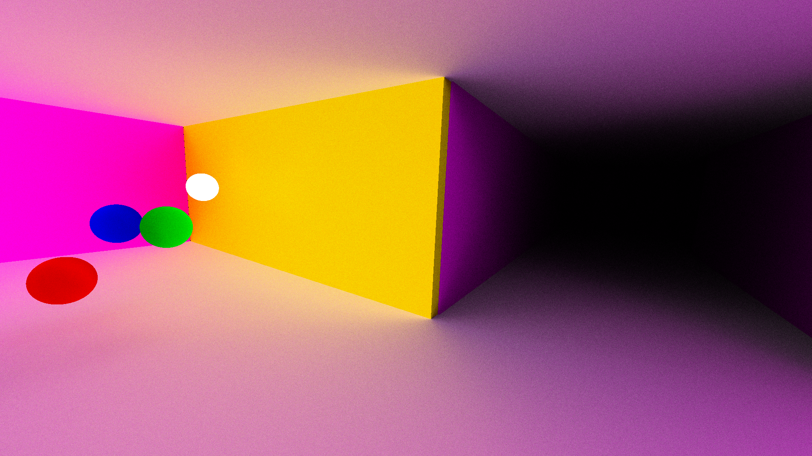

The goal of this game is the same as asteroids, survive and destroy asteroids. However, when you get hit, a random part of your ship gets damaged, which will effect how your ship works. To fix the damage, you need to enter the code that shows in the monitor on the left into the right order on the big buttons in the middle of the console. The materials were all free assets online, but everything else, including the models was made by me.
I made this for my first game design community college class. It was a class all about using Godot 2d and learning about game design. I didn't exactly stick to the 2d part.
By this time I was already used to the idea of a game engine, having been learning unity up until then, so being able to learn a new engine that was so accessible was really the benefit of that class.

 
